À propos de mon expertise

Depuis 2019, j'exerce comme Préparateur et Gestionnaire en Pharmacie, Responsable du service pharmacie du Centre de Santé Urbain (CSU) de Niambezaria, dans le département de Lakota.
Parallèlement à mon expérience quotidienne du terrain sanitaire ivoirien, je suis titulaire d'un Master of Engineering en Logistique (spécialité Distribution), obtenu au sein de la promotion 2021-2023 à l'Institut Supérieur de Mécanique de Paris (ISM Paris).
C'est cette double compétence logistique et pharmaceutique qui m'a conduit à développer, de façon totalement indépendante, des solutions logicielles robustes, répondant précisément à la réalité fonctionnelle et aux besoins de traçabilité des structures de santé et des districts sanitaires de Côte d'Ivoire.
Mes créations
Gestion pharmaceutique
Ma Pharmacie
Réseau de soins de proximité
Solution complète de gestion pour la pharmacie d'un établissement sanitaire de premier contact (ESPC), d'un CSU, d'une clinique ou d'un hôpital :
- gestion des stocks de la réserve et de la salle de vente, avec alertes de rupture et de péremption ;
- caisse multi-postes (espèces, Mobile Money) et prise en charge de l'assurance maladie ;
- suivi des fournisseurs, des créances et des marges ;
- indicateurs de gestion, graphiques et rapports mensuels ;
- formulaires officiels imprimables, remplis à partir de vos données ;
- sauvegarde et restauration des données.
Elle fonctionne sans connexion Internet ; la synchronisation entre plusieurs postes d'un même service est facultative.
Ma Pharmacie District-CI
Gestion de la pharmacie d'un district sanitaire
Outil logistique conçu à l'échelle d'un district sanitaire :
- centralisation des commandes fournisseurs et suivi des entrepôts de stockage ;
- pilotage des livraisons vers les ESPC et les autres établissements du district ;
- suivi des programmes de santé et des créances fournisseurs ;
- indicateurs, graphiques et génération automatique des rapports officiels imprimables ;
- liaison facultative avec les ESPC du district.
Le district fonctionne avec ou sans liaison aux ESPC, y compris hors connexion.
Formation
Chaîne de vie
Apprendre la chaîne d'approvisionnement pharmaceutique en jouant
Jeu de quiz et de simulation pour comprendre le circuit du médicament, de la commande à la dispensation :
- quiz thématiques à plusieurs niveaux, avec séries de questions rapides ;
- études de cas tirées de situations de terrain ;
- scénarios de crise à gérer en pesant budget, relation avec les usagers et écologie ;
- exercices de planification et de remise en ordre des étapes ;
- choix de votre pays parmi les 54 États africains, ou d'une région du monde.
Le jeu fonctionne dans le navigateur et sur Windows, sans compte à créer. Il est destiné aux étudiants, aux agents de santé et à toute personne qui travaille ou se forme dans la logistique pharmaceutique.
Parcours du patient
Ma santé
Application en réseau pour le parcours du patient
Application qui relie entre eux les services d'un centre de santé, selon le parcours suivi par le patient. Elle prolonge l'approche de Ma Pharmacie, en élargissant la gestion au-delà de la seule pharmacie.
Cette application est en cours de conception. Sa date de disponibilité sera annoncée sur cette page.
Aperçu des applications
Quelques écrans de mes créations. Touchez ou cliquez sur une image pour l'agrandir.
Ma pharmacie — réseau de soins de proximité
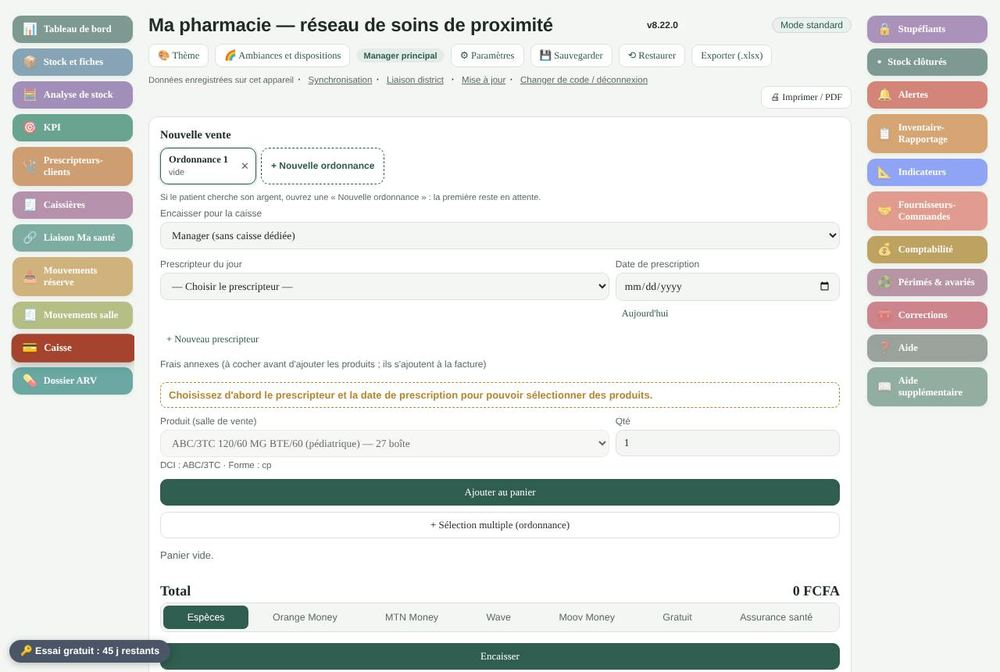
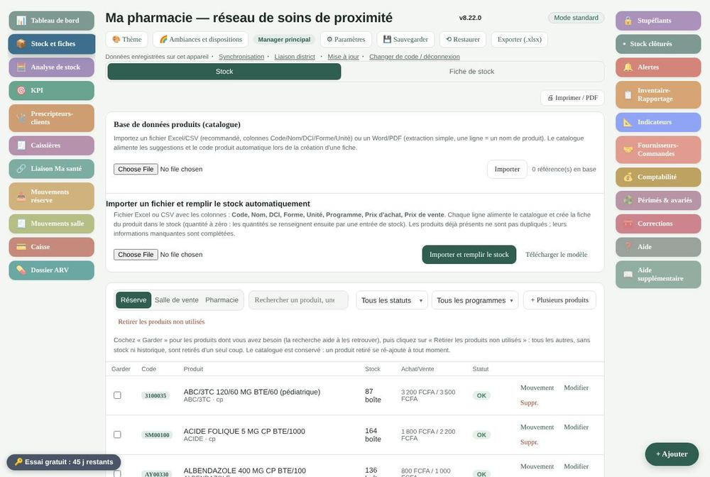
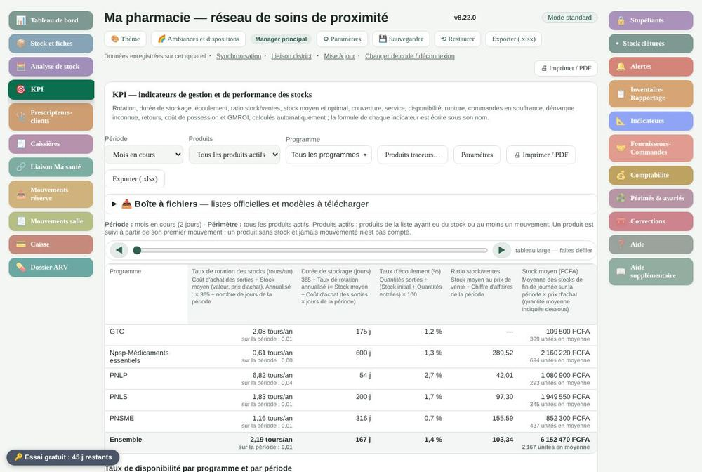
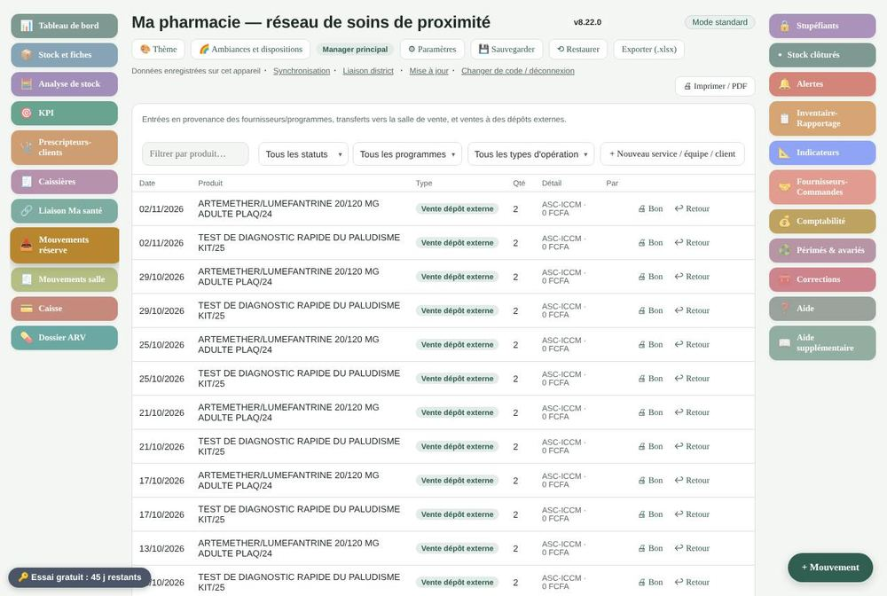
Ma Pharmacie District-CI
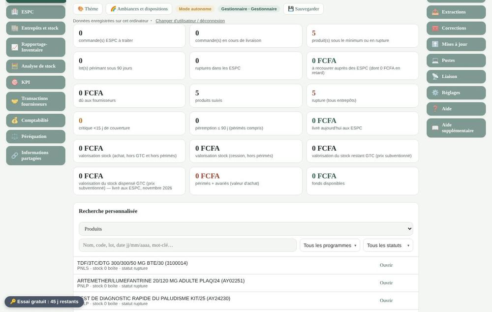
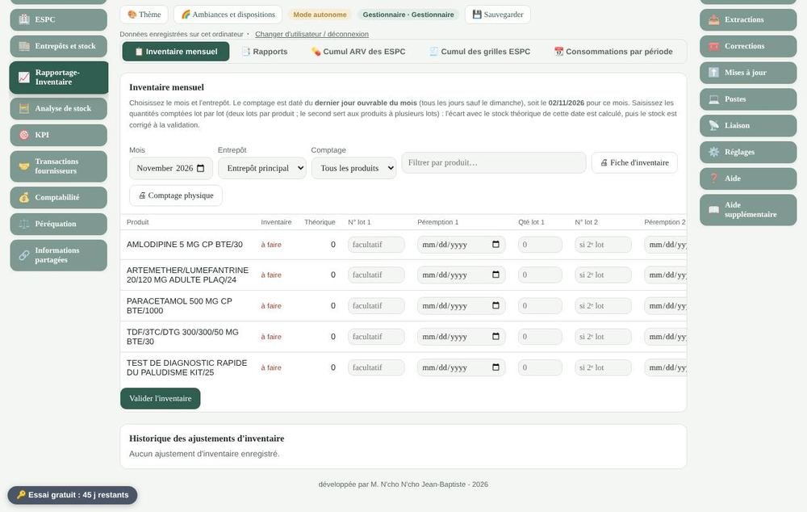
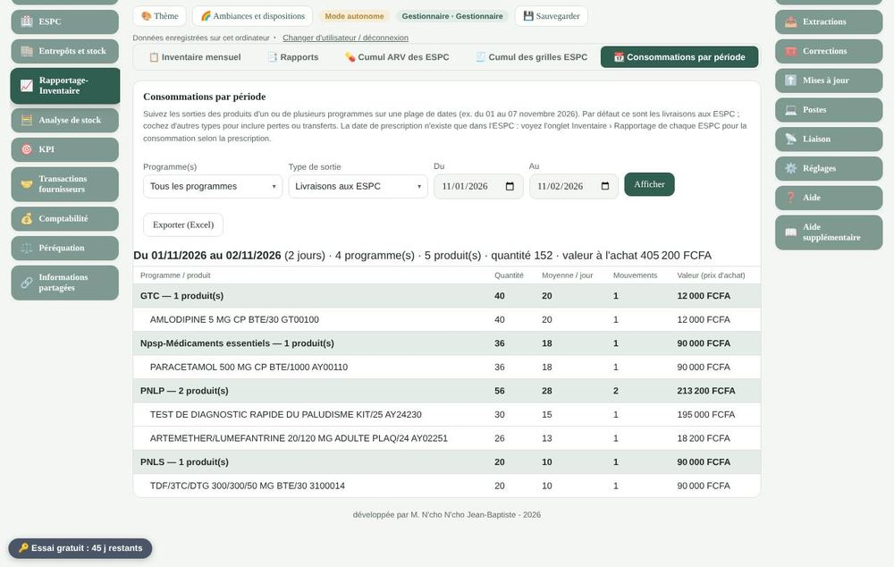
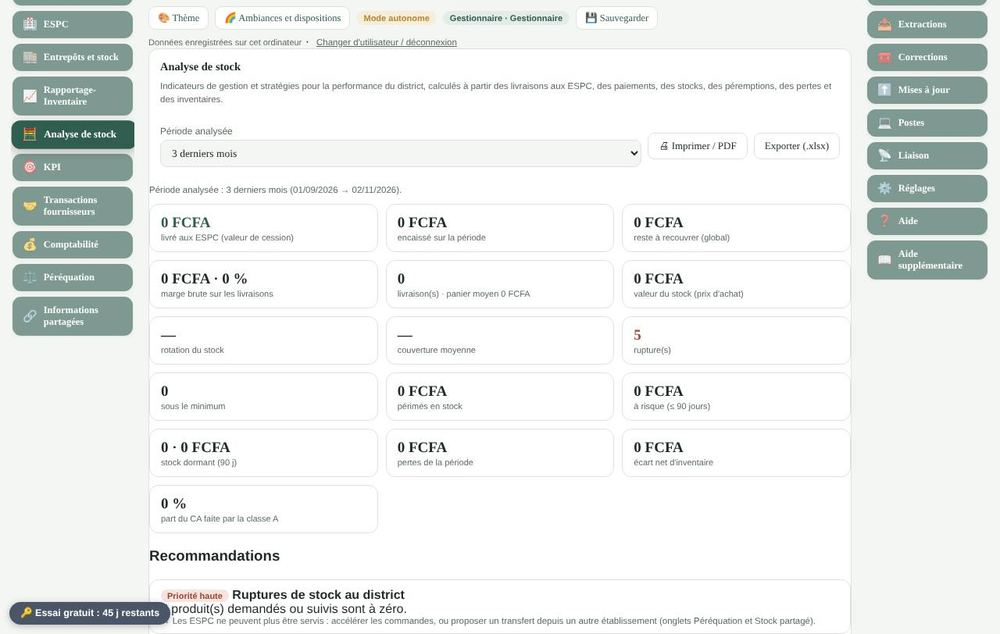
Chaîne de vie
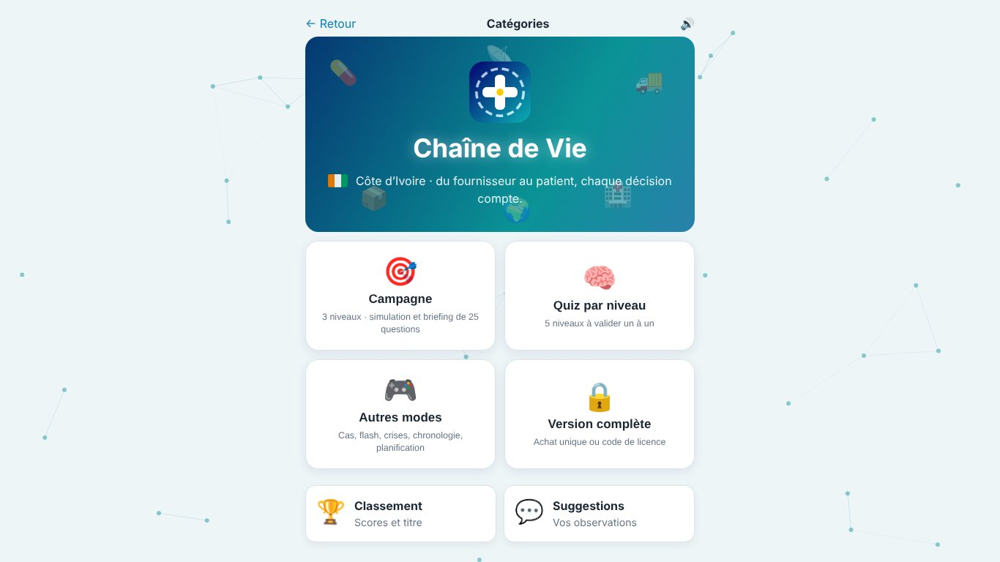
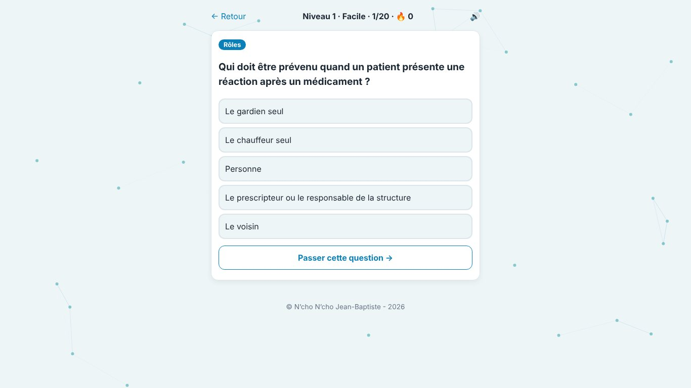
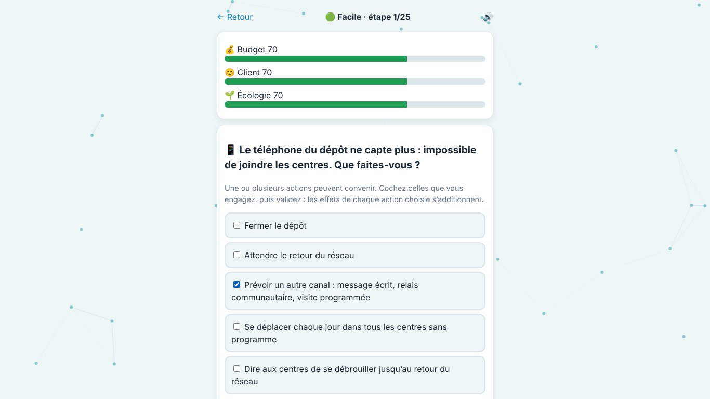
Premiers pas et abonnement
Ma Pharmacie et Ma Pharmacie District-CI :
- Téléchargez l'application sur le Microsoft Store et installez-la sur votre ordinateur.
- Utilisez-la librement pendant 45 jours d'essai ; une alerte vous prévient avant la fin de la période.
- À l'issue de l'essai, l'application passe en lecture seule : vos données restent consultables et sauvegardables, rien n'est perdu.
- Pour poursuivre, choisissez une formule d'abonnement : la demande de licence est intégrée directement dans l'application. La licence vous est transmise par courriel sous 24 à 48 heures.
Les formules et les tarifs en vigueur vous sont communiqués dans l'application ou sur simple demande.
Chaîne de vie : ouvrez le jeu en ligne ou installez-le depuis le Microsoft Store dès sa publication. Une partie du jeu est accessible librement ; la version complète se débloque directement dans le jeu.
Contact & Assistance
📞 Coordonnées de contact direct
Téléphone / WhatsApp : +225 07 58 68 31 89
Adresse e-mail : jncho985@gmail.com
Assistance technique : par courriel ou par WhatsApp, réponse sous 24 à 48 heures ouvrées.
Pour toute demande de partenariat, de déploiement en réseau à grande échelle, d'assistance technique ou d'information sur Chaîne de vie et Ma santé, vous pouvez utiliser ce formulaire. Il prépare un message électronique adressé directement à mon adresse.